Genshin Impact và những lý do tựa game RPG này khiến cộng đồng game thủ phát sốt trong những ngày qua

Từ giữa năm 2019, miHoYo (nhà sản xuất game nổi tiếng ở Trung Quốc) đã tung ra những hình ảnh đầu tiên của tựa game Genshin Impact. Với đồ họa và lối chơi ấn tượng của mình, game đã chinh phục rất nhiều người chơi trên thế giới.
Vào đầu tháng 10 này, khi được trải nghiệm bản chính thức của tựa game, mình hết sức ngạc nhiên với những gì một tựa game free mang lại (dù bạn có thể nạp tiền để có thể có lợi thế hơn). Các cơ chế săn bắt, bay lượn cũng như hệ thống chiến đấu được đầu tư chất lượng đến nỗi nhiều người tưởng đây là phiên bản thứ 2 của Legend of Zelda.
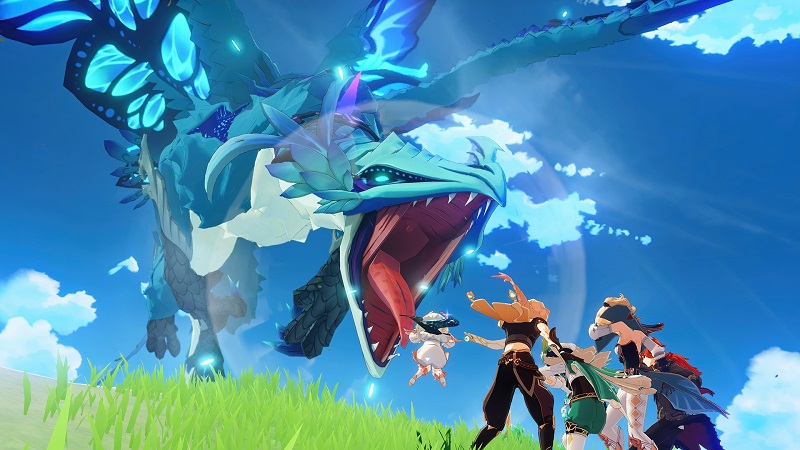Một trong những hình ảnh giới thiệu đầy ấn tượng
Hãy cùng mình tìm hiểu những điểm đặc sắc mà khiến bạn không thể bỏ qua tựa game nhé.
1. Đây là một game miễn phí

Bạn hoàn toàn có thể trải nghiệm miễn phí
Miễn phí! Miễn phí! Miễn phí! Điều quan trọng phải nói lại 3 lần. Đùa tí thôi nhưng thật sự đây là một game RPG hoàn toàn miễn phí cho các bạn trải nghiệm. Không tốn tiền để tải game, không tốn tiền để mua các vật phẩm đặc biệt cũng như cũng chẳng tốn tiền để sở hữu những nhân vật mạnh nhất trong game. Tất cả bạn có thể ‘cày’ được, tuy nhiên, game vẫn hỗ trợ hệ thống nạp tiền để các bạn ‘cày’ dễ hơn. Tuy nhiên, nó chứa yếu tố gacha (quay thưởng), nên dù bạn có nạp nhiều đến mấy mà nhân phẩm đã cạn thì cũng chẳng mạnh hơn được đâu nha.
2. Hỗ trợ đa thiết bị

Hỗ trợ đa nền tảng
miHoYo đã rất chiều người chơi khi mang Genshin Impact lên 4 nền tảng: mobile, PC, PS3 và PS4. Bạn có thể dùng 1 tài khoản để chơi trên cả 4 nền tảng này, có nghĩa là dữ liệu người chơi sẽ được đồng bộ. Thật tiện lợi khi vui vui thì chiến trên máy tính, làm biếng một tí thì nằm chơi trên smartphone.
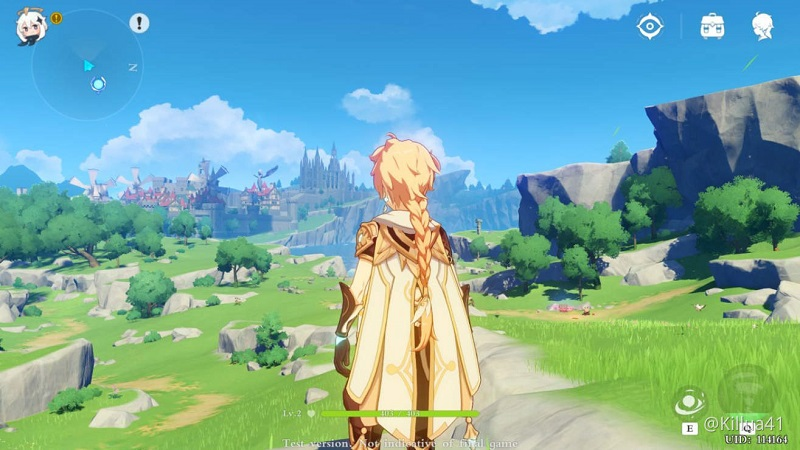Trải nghiệm game trên PC
Điều khó khăn của nhiều tựa game điện thoại khi đem lên PC hay các nền tảng khác là phải giả lập. Điều này cần một con CPU khá mạnh cũng như ngốn khá nhiều RAM. Tuy nhiên, hãng game đã thực sự mang tựa game này lên PC và là phiên bản hoàn toàn dành cho PC. Chiếc laptop của mình khá yếu, chỉ là Intel Core i5 và card đồ họa rời 940MX nhưng vẫn chiến tốt con game này.
3. Game thế giới mở vô cùng đặc sắc
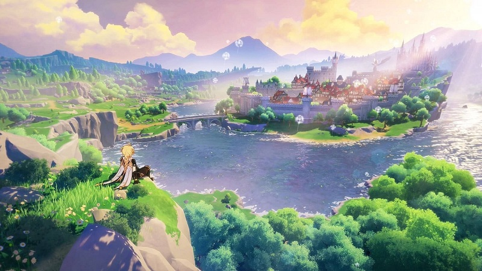Thế giới của Genshin Impact khá rộng lớn
“Genshin Impact là sự kết hợp của nghệ thuật đồ họa anime và tính thẩm mĩ của nhiều nền văn hóa khác nhau. Người chơi sẽ có trải nghiệm hoàn toàn mới khi du hành qua các miền đất khác nhau của Teyvat.” miHoYo trả lời khi được hỏi về môi trường trong game.
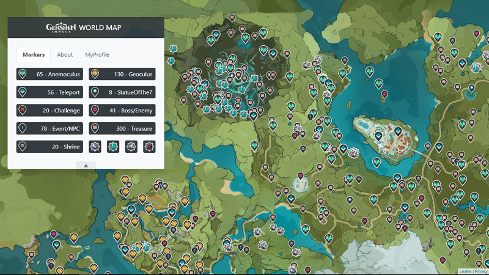Đây chủ mới là bản đồ của một vùng đất trong Genshin Impact
Hiện Genshin Impact chỉ mới giới thiệu 2/7 vùng đất, ấy vậy mà mình mất hơn 2 tuần mà chỉ khám phá được khoảng 40% map này.
Bên cạnh đó tương tác với môi trường trong game cũng là một điểm cộng lớn cho đứa con thơ của nhà miHoYo. Bạn sẽ phải trầm trồ khi chứng kiến hệ thống thời tiết cũng như tương tác nguyên tố của nó. Nắng, mưa, hoàng hôn hay bình minh,... tất cả đều thể hiện rất chi tiết và đẹp mắt. Còn về tương tác nguyên tố, khi bạn sử dụng lửa, cỏ xung quanh sẽ bị cháy, và khi dùng nước hay băng lên lửa thì nó sẽ bốc hơi, hay bạn có thể đóng băng nước bằng nguyên tố của mình hoặc đánh cá bằng nguyên tố điện.
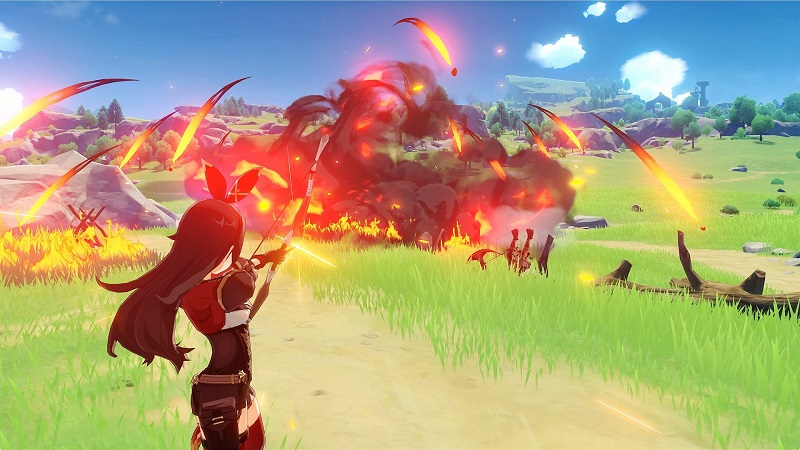Phản ứng nguyên tố lửa
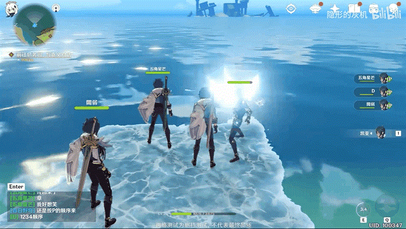Đóng băng nước
Chưa kể hệ thống nhiệm vụ cũng rất đa dạng. Ngoài những Quest chính ta còn có thêm các Quest hàng tuần hay một số Quest giải trí như câu cá, trượt băng, nấu ăn,... Mà nếu muốn nấu ăn bạn phải tự đi thu thập nguyên liệu để nấu nhé.
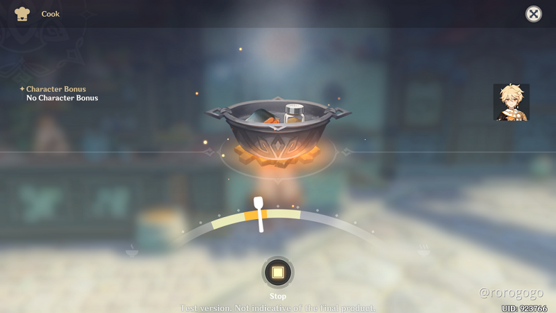Hệ thống có đủ trò cho bạn vui chơi, đây là hình của cơ chế nấu ăn
À quên nói về cốt truyện, mình đã trải qua khoảng 50% cốt truyện hiện tại và nhận thấy rằng đây là một game có chiều sâu. Từng nhân vật đều được nhà sản xuất khá trau chuốt, sớm muộn gì game cũng sẽ có truyện tranh và đầy drama như cái cách họ làm với Honkai Impact 3 thôi.
4. Nhân vật và hệ thống chiến đấu độc đáo
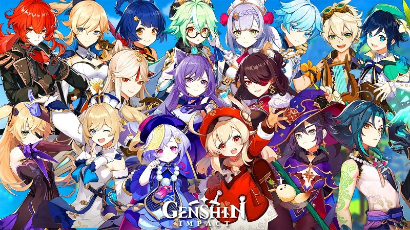Dàn nhân vật đồ sộ và sẽ ra mắt tiếp trong tương lai
Trong quá trình khám phá Teyvat của mình, bạn sẽ được gặp những một dàn nhân vật đầy màu sắc và cá tính riêng, những người sẽ giúp bạn trong cuộc hành trình của mình. Ngoài ra có 23 nhân vật bạn có thể điều khiển (có nhân vật cho free, có nhân vật phải quay thưởng), chiêu thức và cách chiến đấu của các nhân vật này cũng khác nhau. Họ sức mạnh để thao túng nguyên tố riêng của bản thân, có 7 nguyên tố bao gồm: Hydro, Pyro, Electro, Anemo, Geo, Dendro và Cryo.
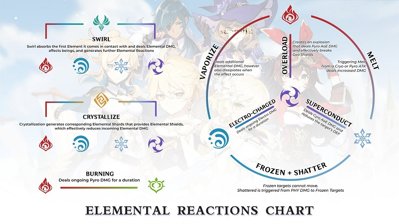Bảng phản ứng nguyên tố trong Genshin Impact
Hệ thống chiến đấu của game cũng khá dễ để làm quen, nhưng bạn cần dành nhiều thời gian để thành thục nó. Mỗi nhân vật sẽ có 3 nút chính là đánh thường, chiêu thức phụ và ultimate, khá là ít so với các game RPG hiện tại. Tuy nhiên, nếu bạn đã trải nghiệm Honkai Impact 3 thì bạn sẽ thấy chỉ với những nút này, chúng ta đã có combo đẹp mắt như thế nào.
Chuyển đổi nhân vật trong lúc chiến đấu mang lại phản ứng nguyên tố, điều này làm cho lối chơi và chiến đấu trở nên đa dạng hơn đồng thời cho phép bạn gây một lượng sát thương lớn cho mục tiêu. Như đã nói ở trên, bạn cũng có khả năng tương tác với môi trường nhờ các nguyên tố này.
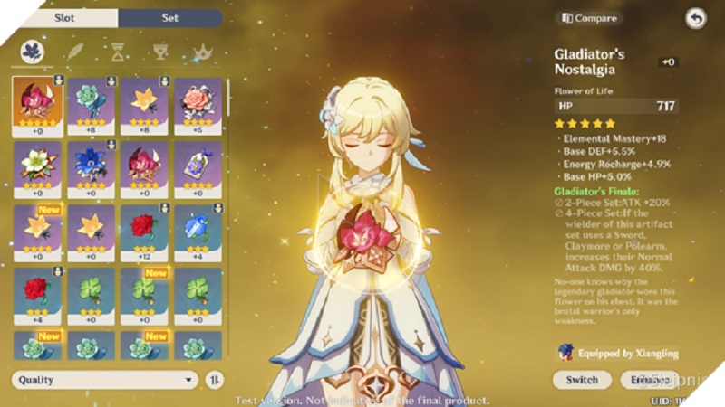Thánh di vật trong game
Và còn nhiều thứ khác như vũ khí, thánh di vật, thiên phú,... và hàng tá thứ thú vị khác. Bạn hãy tự trải nghiệm để biết thêm nha.
5. Đậm chất anime
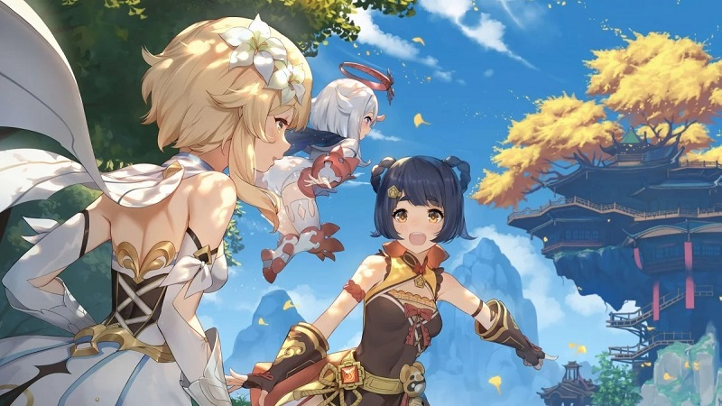Game đậm chất anime từ nét vẽ đến cốt truyện
Anime thì có anime this, anime that nhé, mọi người đừng nói game dành cho quý bửu nữa mà, hic. Đùa đấy, thực sự Genshin Impact là một game đậm chất anime, bạn sẽ chẳng tin nếu nói miHoYo là nhà sản xuất Trung Quốc đâu.
Nếu để ý kĩ, các yếu tố isekai (chuyển sinh), ma thuật, drama hay lãng mạn đều được phối hợp nhịp nhàng trong game. Để củng cố phong cách anime của game, người chơi sẽ có một người bạn nhỏ bé Paimon (hay bị chọc là đồ ăn dự trữ). Không biết đây có phải là trùm cuối của chúa hề hay không nhưng Paimon luôn đem lại tiếng cười cho người chơi bởi sự ngu ngốc của mình (miễn là bạn đừng nghiêm túc quá).
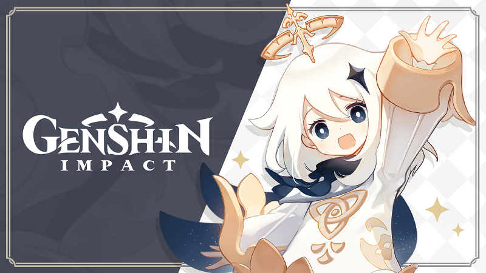Người bạn đồng hành dễ thương, Paimon
Kiểu thiết kế nhân vật thì cũng khỏi phải bàn tới, nếu các bạn có theo dõi anime thì chắc cũng nhận ra rồi phải không. Mình không nói là mình thích các nhân vật nữ trong game đâu.
6. Dịch thuật chân thật, hỗ trợ đa ngôn ngữ
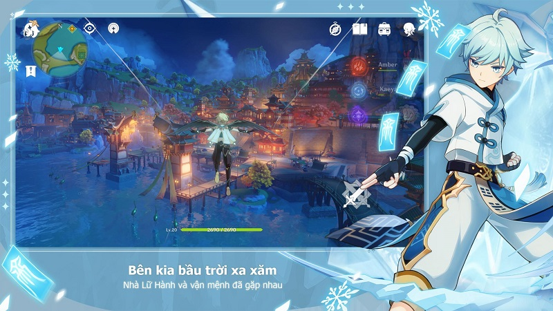Mình cũng phải dành lời khen cho đội dịch thuật của game, bởi không chỉ dịch game qua nhiều ngôn ngữ khác nhau, lời dịch còn có cảm xúc và đúng hoàn cảnh nhân vật. Nhiều game hỗ trợ tiếng Việt bị một lỗi khá nặng là dịch thuật quá hời hợt, đôi khi là word by word luôn. Còn với Genshin Impact thì không. Mình sẵn sàng đọc hết các câu thoại của nhân vật vì nó dẫn dắt khá hay cũng như hợp lý vô cùng.
Và còn nhiều nhiều lý do khiến bạn phải tải ngay Genshin Impact này về chiến nữa. Nhưng điều duy nhất cản trở bạn có thể là dung lượng. Em nó cũng nhẹ lắm có cỡ 16 Gb à. Cơ mà có gì cản được đam mê, không chơi điện thoại ta lên máy tính. Mau mau tải về tại trang chủ của Genshin Impact nha.
Trên đây là những điều đặc sắc về Genshin Impact khiến bạn không thể bỏ qua tựa game này. Nếu là bạn, bạn có muốn trải nghiệm thử hay không? Hãy để lại bình luận nhé.